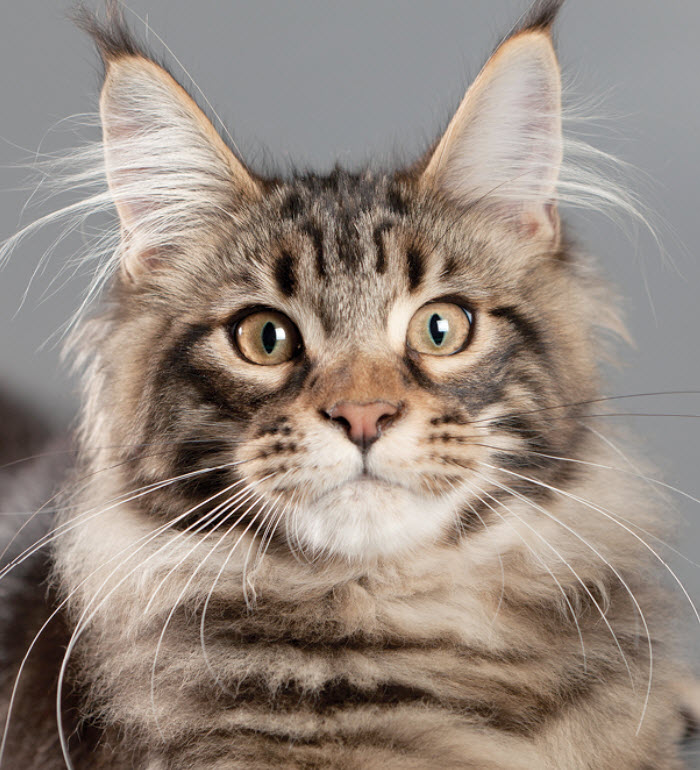

Your cat is special! She senses your moods, is curious about your day, and has purred her way into your heart. Chances are that you chose her because you like Maine Coons (sometimes called “Coon Cats”) and you expected her to have certain traits that would fit your lifestyle, like:
Is it all worth it? Of course! She's full of personality, and you love her for it! She is a calm and affectionate gentle giant.
The Maine Coon is known for its large size and thick double coat of long hair which is well suited for the harsh winters in Maine, the state from which they originated. Relaxed and laid-back, Maine Coons are not overly dependent, but they are people oriented. They are happy to follow their owners from room to room, coming when called and playing fetch. Some Maine Coons are attracted to water and may even enjoy an occasional swim.
We know that because you care so much about yourcat you want to take great care of her. That is why we have summarized the health concerns we will be discussing with you over the life of your Maine Cat. By knowing about the health concerns common among Maine Coons, we can help you tailor an individual preventive health plan and hopefully prevent some predictable risks in your pet.
Many diseases and health conditions are genetic, meaning they are related to your pet’s breed. The conditions we will describe here have a significant rate of incidence or a strong impact upon this breed particularly, according to a general consensus among feline genetic researchers and veterinary practitioners. This does not mean your cat will have these problems, only that she may be more at risk than other cats. We will describe the most common issues seen in Maine Coons to give you an idea of what may come up in her future. Of course, we can’t cover every possibility here, so always check with us if you notice any unusual signs or symptoms.

This guide contains general health information important to all felines as well as information on genetic predispositions for Maine Coons. The information here can help you and your pet’s healthcare team plan for your pet’s unique medical needs together. At the end of the article, we have also included a description of what you can do at home to keep your Coon Cat looking and feeling her best. We hope this information will help you know what to watch for, and we will all feel better knowing that we’re taking the best possible care of your friend.
Obesity is a major disease that contributes to a surprisingly large number of illnesses and deaths in cats.
This revelation is more well-known and well-understood today than in the last few decades, but too many owners are still ignoring the dangers of extra weight on their pets. Excess weight is one of the most influential factors in the development of arthritis, diabetes, and other life-threatening diseases. Everyone knows—many firsthand from personal experience—how even shedding just a few pounds can result in improved mobility and increased overall motivation to be active. And the same is true for your pet.
Research suggests that carrying excess weight may shorten a pet’s life by as much as two years, and can cause the onset of arthritis two years sooner. Diabetes, an inherited disease, has a much higher chance of developing in overweight pets, and may never become a problem for a healthy-weight cat. The more obese a cat becomes, the more likely it will become diabetic. Hepatic lipidosis, or fatty liver, is another potentially fatal disease in overweight pets; hepatic lipidosis can develop in as few as 48 hours when an overweight cat stops eating for any reason.
So how can we help our pets stay trim? Understanding your cat's dietary habits is key. The average cat prefers to eat about 10-15 times a day, just a few nibbles at a time. This method, free-feeding, works well for most cats, but boredom may increase the number of trips your cat makes to the food bowl. By keeping your cat playfully active and engaged, you'll help your pet stay healthy and have some fun at the same time! A string tied to a stick with something crinkly or fuzzy on the other end of the string, and a little imagination—you and your cat will both be entertained. Food puzzles, like kibbles put in a paper bag or under an overturned basket or box, may help to motivate cats with more food-based interests to romp and tumble.
For really tough cases of overeating, you will have to take a firm stance, and regulate your cat’s food intake. Instead of filling your cat’s bowl to the top, follow the feeding guide on the food package and be sure to feed a high-quality adult cat diet as recommended by your vet. Replace your cat's habits of eating when bored with extra playtime and affection. Cats typically adjust their desires for personal interaction by the amount of affection offered to them, so in other words, ignoring your cat means your cat will ignore you. By the same token, loving on and playing with your cat a lot will cause your cat to desire that time with you. A more active cat means a healthier, happier pet—and owner!
Dental disease is one of the most common chronic problems in pets who don’t have their teeth brushed regularly. Unfortunately, most cats don’t take very good care of their own teeth, and this probably includes your Maine Cat. Without extra help and care from you, your cat is likely to develop potentially serious dental problems. Dental disease starts with food residue, which hardens into tartar that builds up on the visible parts of the teeth, and eventually leads to infection of the gums and tooth roots.Protecting your cat against dental disease from the start by removing food residue regularly may help prevent or delay the need for advanced treatment of dental disease. This treatment can be stressful for your cat and expensive for you, so preventive care is beneficial all around. In severe cases of chronic dental infection, your pet may even lose teeth or sustain damage to internal organs. And, if nothing else, your cat will be a more pleasant companion not knocking everyone over with stinky cat breath! We’ll show you how to keep your cat's pearly whites clean at home, and help you schedule regular routine dental exams.

Much of what you can do at home to keep your cat happy and healthy is common sense, just like it is for people. Watch her diet, make sure she gets plenty of exercise, regularly brush her teeth and coat, and call us or a pet emergency hospital when something seems unusual (see “What to Watch For” below). Be sure to adhere to the schedule of examinations and vaccinations that we recommend for your pet. During your cat's exams, we’ll perform her necessary “check-ups” and test for diseases and conditions that are common in Maine Cats. Another very important step in caring for your pet is signing her up for pet health insurance. There will certainly be medical tests and procedures she will need throughout her life and pet health insurance will help you cover those costs
Build your pet’s routine care into your schedule to help your Coon Cat live longer, stay healthier, and be happier during her lifetime. We cannot overemphasize the importance of a proper diet and exercise routine for your pet.